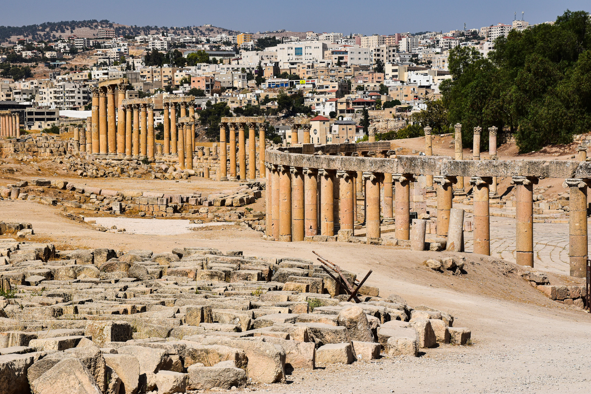

Jerash, Jordan
Jerash, Jordan
Jerash is an ancient city in Jordan, famous for its well-preserved Roman ruins, colonnaded streets, theatres including remarkable monuments, and the temples of Artemis and Nymphaeum.

ANARCH - Ancient Archaeology
Jerash is an ancient city in Jordan, famous for its well-preserved Roman ruins, colonnaded streets, theatres including remarkable monuments, and the temples of Artemis and Nymphaeum.
